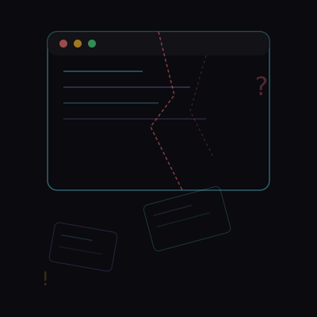
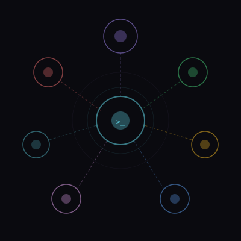

Interactive Presentation Framework
Create Beautiful, Immersive Presentations
Animated slides. Three.js backgrounds. Touch-friendly navigation. Zero dependencies.
2026
The Question
Traditional presentation tools produce flat, static slides. No animations, no immersion, no way to captivate a modern audience.
Reveal.js, Impress.js, and others require build steps, configuration, and deep knowledge. Getting started shouldn't be hard.
A single HTML file with CSS animations, Three.js backgrounds, and touch-friendly navigation. Just open and present.
"Building engaging web presentations requires stitching together dozens of libraries, writing boilerplate, and fighting with build tools."

A complete framework for immersive web presentations.
Three pillars. One seamless experience.
Write your slides in plain HTML. Each section is a slide with built-in layout classes.
CSS variables control the entire theme. Dark mode, colors, typography — all customizable.
Open in any browser. Navigate with keyboard, touch, or mouse. Deploy to GitHub Pages.
"Each slide smoothly transitions with CSS animations. Elements phase in on timers. Navigation responds to keyboard, touch, and mouse."

Choose from title, center, two-column, two-column-reverse, or create your own — all with CSS grid and flexbox.
Tables, stats, and live data — all styled and animated.
Pure HTML + CSS + JS. No build step. No framework. Just open the file and present.
git clone https://github.com/user/web-presenter
python3 -m http.server 8000
git push origin main
Why It Matters
of audiences lose focus in the first 10 minutes of a flat slideshow
more engagement with animated presentations
to create your first presentation
build tools or dependencies required
"Immersive presentations aren't a luxury — they're how modern audiences expect to experience ideas."
Your Turn
Clone the repo, point your favourite AI agent at it, and let it build you a stunning deck — complete with narration and WebGL visuals.
git clone https://github.com/schlunsen/web-presenter.git export HF_TOKEN="hf_your_token"
"Create a 10-slide presentation about space exploration. Make it dramatic. Generate narration and images."
python3 -m http.server 8000 git push origin main # → GitHub Pages
Edit index.html with the built-in layout system
Run generate-assets.py all — TTS narration via Edge TTS + images via HuggingFace FLUX
Run clone-voice.py to clone a voice from a sample
Use creator.html or editor.html for browser-based LLM editing
git clone https://github.com/schlunsen/web-presenter.git